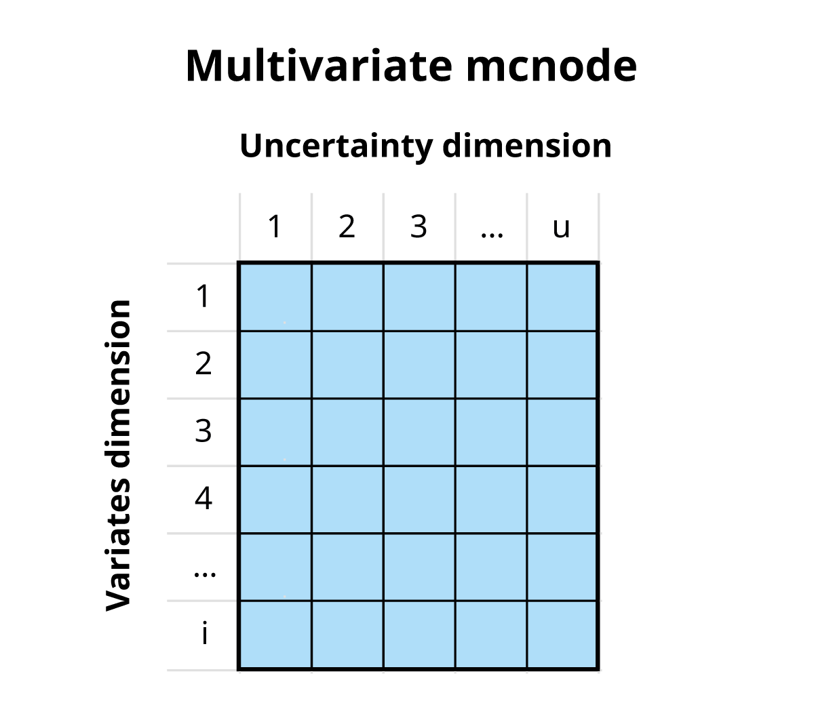
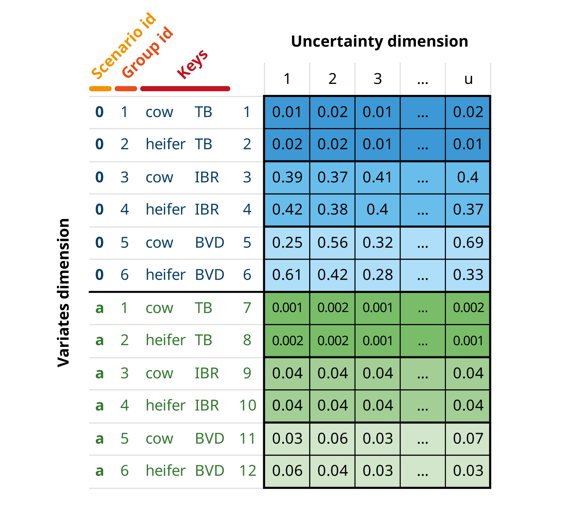

mcmodule
Modular Monte-Carlo Risk Analysis
Natalia Ciria
Source:vignettes/mcmodule.Rmd
mcmodule.RmdWork in progress! 🏗
Introduction
This guide presents a flexible approach for building risk assessment models with Monte Carlo simulations in R. The framework is multivariate, allowing simultaneous analysis of multiple variates (different categories or groups), and modular, breaking complex systems into manageable components.
The mc2d R package (Pouillot and Delignette-Muller 2010)
provides tools to build and analyse models involving multiple variables
and uncertainties based on Monte Carlo simulations. However, these tools
are limited when handling multiple variates, and complex models can be
difficult to analyse and interpret. The mcmodule package
builds on the R package mc2d to enhance model flexibility. This new
package provides:
- Tools to add metadata to model elements for better traceability and debugging
- Tools to handle complex multivariate variables
- A framework to break down Monte Carlo models into smaller, reusable components (modules) that can be analysed independently before integration
Multivariate Monte-Carlo simulations
Quantitative risk analysis is the numerical assessment of risk to facilitate decision making in the face of uncertainty. Monte Carlo simulation is a technique used to model and analyse uncertainty (Vose 2008). In typical two-dimensional Monte Carlo simulation, one dimension represents variability and the other represents uncertainty. However, in this framework, we take a different approach where:
We combine variability and uncertainty into one dimension (u)
We use variates (representing different groups or categories) in the other dimension (i)
This approach enables us to track multiple values across groups simultaneously using variates and to handle cases where values must be aggregated by animal movements, farms, or other grouped entities. Although it would be technically possible to separate variability and uncertainty, the exponential increase in computational and programming requirements would make it impractical in models of this size.
In this framework, an mcnode is an array of dimensions (u × 1 × i), where u is the dimension of variability and uncertainty combined, and i is the number of variates. As most of the input parameters are uncertain, we will use the term “uncertainty dimension” throughout this document to refer to the combined dimension of variability and uncertainty.

For example, if we are buying a number of cows and heifers from a specific region, a mcnode for herd prevalence would have:
Multiple variates (rows), each representing a specific animal category-disease combination. The variables that define and distinguish these variates are called keys.
Probability values generated through a PERT distribution (rpert), using minimum, mode, and maximum parameters across u iterations (columns) to model the uncertainty in these estimates.

Scenarios
This framework enables the creation and comparison of scenarios. For comparisons, you need a baseline scenario (scenario “0”) and one or more alternative scenarios. Variates within a scenario are called “groups.” While not every scenario needs to contain all baseline groups, any groups present in alternative scenarios must exist in the baseline.
The scenario id, group id, and row number are the three mcnode properties that enable row matching and row aggregation operations.

Multivariate nodes operations
Element-wise operations
Most operations in this model are element-wise, meaning each calculation occurs independently on matching elements across nodes. These operations preserve node dimensions while applying functions (such as multiplication or addition) to corresponding elements, allowing uncertainties and variates to propagate through the calculations.

Row matching
Row matching operations align nodes to ensure they have compatible dimensions and properly matched rows for element-wise calculations. This is especially important when working with nodes containing different scenarios. The matching process may require reordering, duplicating, or adding rows to either or both nodes.
Row matching between nodes is needed in the following cases and their combinations:
Group matching
Nodes with same scenarios/dimensions but different group order
- Check if keys that define groups are in a different order

- Assign common group ids, based on keys

- Reorder rows to align group ids. This is similar to dplyr
left_join

Scenario matching
Nodes with same groups but different scenarios. The general rule for these operations is that when no scenario is specified, it is assumed that a variable takes the values from the baseline scenario.
- Check if scenarios are different

- For missing scenarios, duplicate the baseline scenario (scenario “0”)

- When nodes matched by scenario are used in an element-wise
operation, the resulting node will contain all scenarios from both input
nodes. This is conceptually similar to a dplyr
full_join, except that any unmatched rows use values from the baseline scenario.

Null matching
When nodes contain different scenarios and groups, some groups may be missing from certain nodes. These missing groups (called “null” variates) are assigned a probability of 0. This operation typically complements scenario matching.
- Check for missing groups

- Add null variates with probability 0 for any missing groups (and apply scenario matching)

- When nodes are matched by scenario in an element-wise operation, the resulting node will contain all groups from both input nodes

Combined probabilities
A special type of element-wise operation that automatically deals with row matching. Combines probabilities of multiple events assuming independence, using the formula:
Row aggregation
Row aggregation operations combine values across multiple rows (variates) in an mcnode using specific criteria. These operations calculate overall probabilities or sum quantities across groups.
Probabilities
Some events can occur independently across multiple variates of the same node. For example, a disease might be present in animals from different regions or farms. To calculate the probability of an event occurring in at least one variate within a subset, we first group the data by aggregation keys (agg_keys). Then, for each subset, we use the standard probability formula for independent trials to find the probability of the event occurring in at least one variate.
Where:
S represents the subset of variates included in the aggregation
p represents the probability of an event occurring
p_agg represents the probability of occurrence in at least one variate of S

If scenarios are being simulated, scenario id must always be included as an aggregation key, as probabilities are not calculated across different what-if scenarios.
You can also keep all variariates, with their corresponding aggregated values, to ensure dimensions compatibility in further calculations.

Quantities
When working with quantities (such as number of animals or farms), we calculate totals by summing values across variates within each subset.
Where:
S represents the subset of variates included in the aggregation
n represents the quantity value
n_agg represents the sum of quantities across all variates in S
Trials
In this framework, nodes typically represent the probability of success for a single trial with a binary outcome (success/failure). A trial is one instance where an event might occur, for example, an animal, farm, batch, animal movement, or farm visit. Each trial has two possible outcomes, such as whether an animal is infected or not, or whether a test is positive or negative. In single-level trials, all trials are independent and have the same probability of success1.
Some probability processes follow a hierarchical structure where events occur at different levels. For example, when animals are purchased from multiple farms, we must consider both the probability of a farm being infected and the probability of an individual animal within that farm being infected. This means infection probabilities for animals from the same farm are not independent. In multilevel trials, trials are organized into subsets, with each subset having its own selection probability. A subset represents a group sharing specific characteristics, for example, animals from the same farm or with the same health status.
Most of the following probability processes and calculations are based on Chapter 5 of the Handbook on Import Risk Analysis for Animals and Animal Products Volume 2. Quantitative risk assessment (Murray 2004).
Single-level trials
In single-level trials, each trial is independent with the same probability of success (). For a set of trials, the probability of at least one success is:
In imports_mcmodule, we have the probability that an
infected animal from an infected farm goes undetected
().
When all animals (in a variate) have the same probability, we can use
the total number of animals selected per farm
()
as the number of trials (trials_n) to determine the
probability that at least one infected animal from one farm is not
detected
().
Note that while
isn’t defined as an mcnode in imports_mcmodule (not used in
imports_mcmodule$model_exp), it can be automatically
generated in trial_totals() because it’s included in
imports_mctable and the required data exists in
imports_mcmodule$data.
# Single-level trial
imports_mcmodule <- trial_totals(
mcmodule = imports_mcmodule,
mc_names = "no_detect_a", # trial_p
trials_n = "animals_n",
mctable = imports_mctable
)
# Probability that at least one infected animal from an infected farm is not detected
mc_summary(imports_mcmodule,"no_detect_a_set")[,-1]
#> pathogen origin mean sd Min 2.5% 25%
#> 1 a nord 0.9999344 7.271373e-05 0.9994190 0.9997340 0.9999148
#> 2 a south 0.9999945 9.174980e-06 0.9998817 0.9999651 0.9999936
#> 3 a east 1.0000000 3.759259e-10 1.0000000 1.0000000 1.0000000
#> 4 b nord 0.9994337 7.901747e-04 0.9939744 0.9970818 0.9993747
#> 5 b south 1.0000000 4.055315e-14 1.0000000 1.0000000 1.0000000
#> 6 b east 1.0000000 0.000000e+00 1.0000000 1.0000000 1.0000000
#> 50% 75% 97.5% Max nsv Na's
#> 1 0.9999601 0.9999825 0.9999952 0.9999982 1001 0
#> 2 0.9999979 0.9999993 0.9999999 1.0000000 1001 0
#> 3 1.0000000 1.0000000 1.0000000 1.0000000 1001 0
#> 4 0.9997226 0.9998992 0.9999833 0.9999951 1001 0
#> 5 1.0000000 1.0000000 1.0000000 1.0000000 1001 0
#> 6 1.0000000 1.0000000 1.0000000 1.0000000 1001 0Multilevel trials
Simple multilevel
In multilevel trials, we account for hierarchical structures where trials are organized into subsets. For example, when considering animals () from different farms (), we must account for both the farm’s selection probability () and the individual animal’s probability of success ().
The probability of at least one success in this hierarchical structure is given by:
Where:
trials_p represents the probability of a trial in a subset being a success
trials_n represents the number of trials in subset
subset_p represents the probability of a subset being selected
subset_n represents the number of subsets
set_p represents the probability of a at least one trial of at least one subsetbeing a success
When considering animals (trials_n) from different farms
(subset_n, we must account for both the farm’s probability
of being infected (subsets_p) and the individual animal’s
probability of being infected (trial_p).


# Simple multilevel trial
imports_mcmodule <- trial_totals(
mcmodule = imports_mcmodule,
mc_names = "no_detect_a", # trial_p
trials_n = "animals_n",
subsets_n = "farms_n",
subsets_p = "h_prev",
mctable = imports_mctable
)
# Probability that at least one infected animal from at least one farm is not detected
mc_summary(imports_mcmodule,"no_detect_a_set", digits=2)[,-1]
#> pathogen origin mean sd Min 2.5% 25% 50% 75% 97.5% Max nsv Na's
#> 1 a nord 0.38 0.0200 0.34 0.34 0.36 0.38 0.39 0.41 0.41 1001 0
#> 2 a south 0.30 0.0600 0.18 0.19 0.24 0.30 0.36 0.40 0.40 1001 0
#> 3 a east 0.60 0.0400 0.52 0.53 0.57 0.60 0.64 0.67 0.68 1001 0
#> 4 b nord 0.99 0.0081 0.97 0.97 0.98 0.99 0.99 1.00 1.00 1001 0
#> 5 b south 0.96 0.0081 0.94 0.94 0.95 0.96 0.97 0.97 0.97 1001 0
#> 6 b east 0.97 0.0200 0.92 0.92 0.95 0.97 0.98 0.99 0.99 1001 0Multiple group multilevel trials
In multiple group multilevel trials, several variates (groups) can belong to the same subset. For example, when selecting animals of different categories (cow, calf, heifer, bull) from the same farm, their infection probabilities are not independent. You should include aggregation keys for groups that are not independent to calculate their trial probabilities, for example, aggregating variates for different animal categories by farm. For this calculation, the subset_p and subset_n values must be identical across all variates being aggregated.
Where:
S represents the variates included in the aggregation
trials_p represents the probability of success of a trial in a subset
trials_n represents the number of trials in subset
trials_p _agg represents the probability of success of at least one variate in at least one of the aggregated variates
subset_p represents the probability of a subset being selected
subset_n represents the number of subsets
set_p_agg represents the probability of success of a at least one trial in at least one of the aggregated variates in at least one subset
As with row aggregation, you can keep all variates to maintain dimensions compatibility in further calculations.